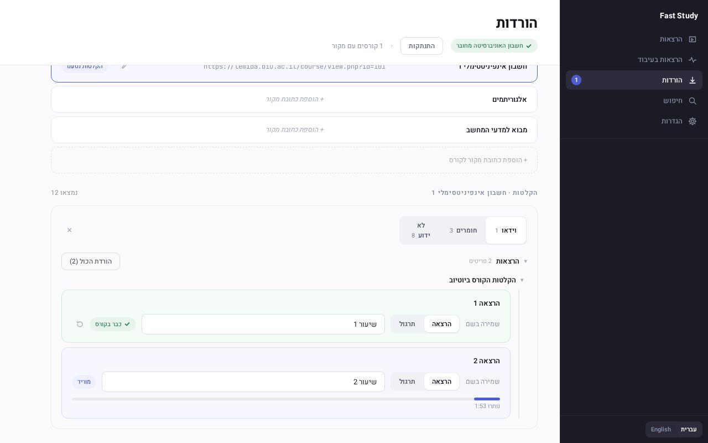
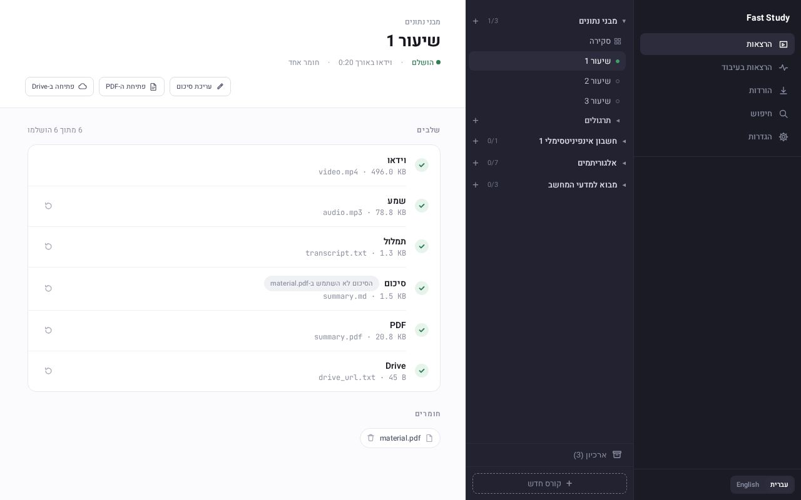
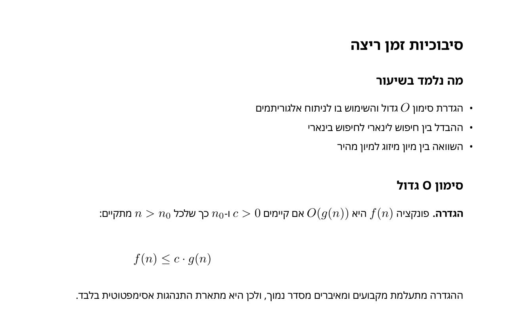
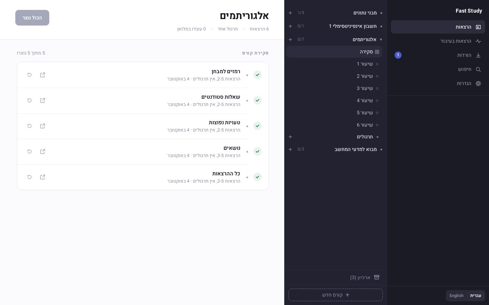
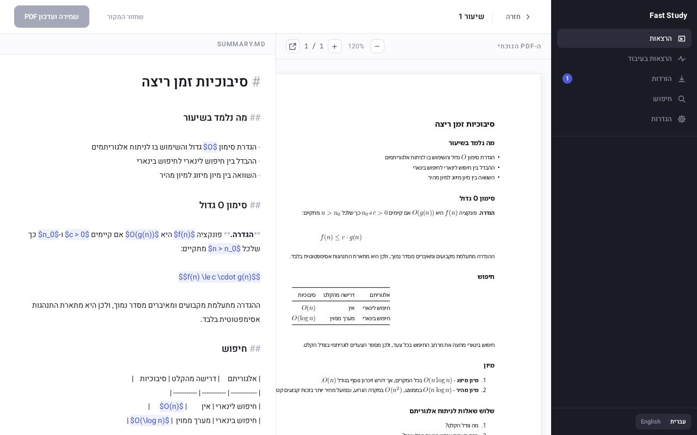
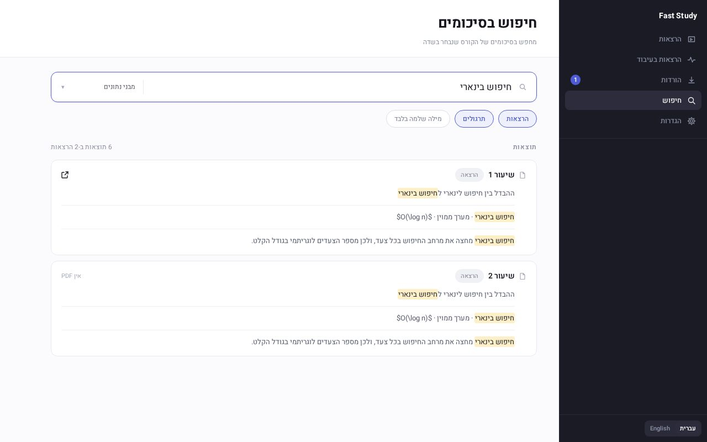
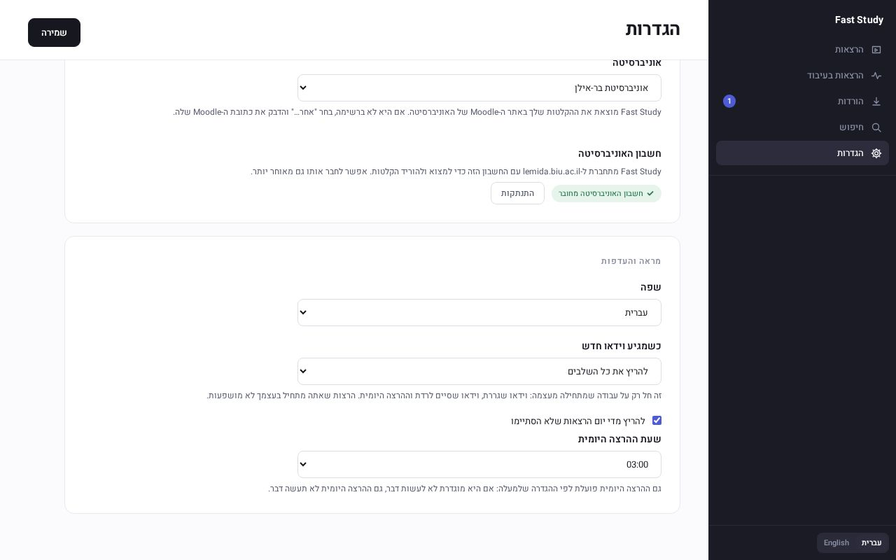
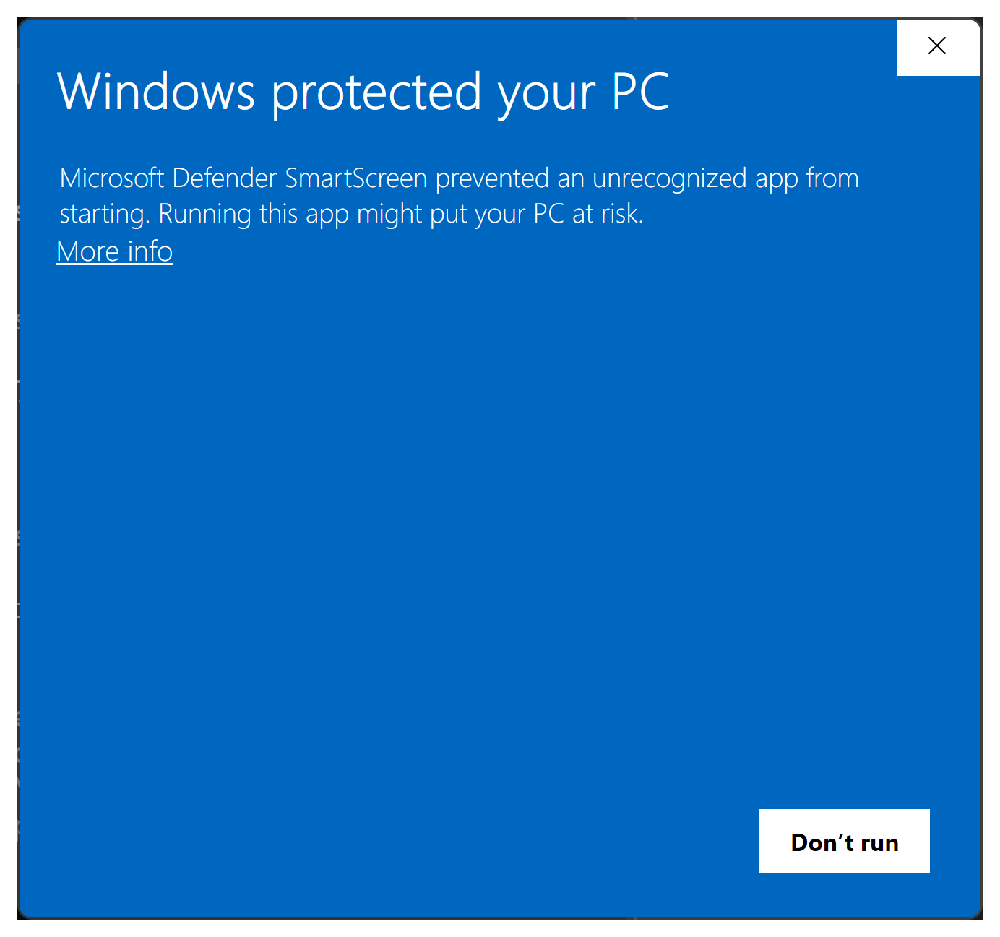
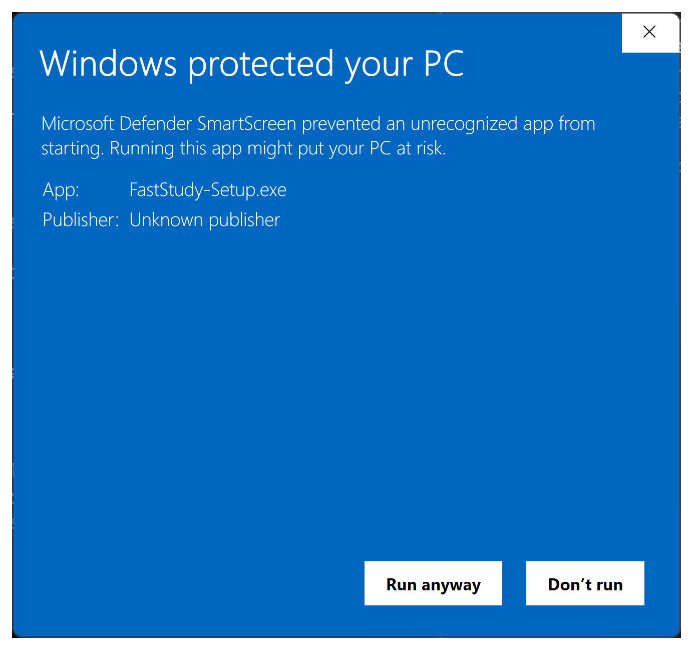
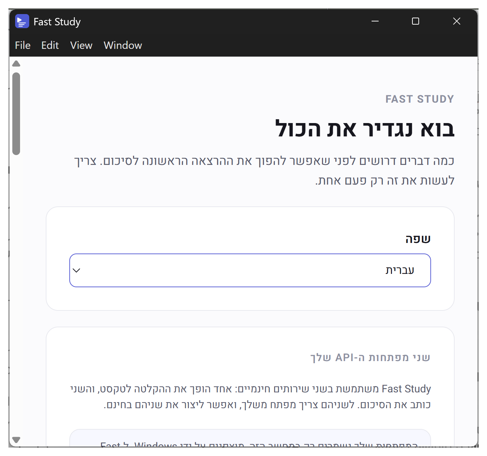

הורדה אוטומטית מאתר האוניברסיטהAuto-download from the university site
הקלטות של הרצאות ותרגולים, כולל Zoom, וקובצי ה־PDF של הקורס. Lecture and recitation recordings, Zoom included, and the course's PDF handouts.

FastStudy הופכת הרצאה מוקלטת בעברית לסיכום כתוב ומובנה בקובץ PDF. ניתן להעלות את הסיכומים ל־Google Drive. FastStudy turns a recorded Hebrew lecture into a structured written summary as a PDF. You can also upload the summaries to Google Drive.
Windows 10/11 · חינםFree
גרסה __VERSION__ · __SIZE__ MB Version __VERSION__ · __SIZE__ MB

בוחרים את האוניברסיטה ומתחברים לחשבון שלכם.Pick your university and sign in to your account.
ניתן להוריד הרצאות ותרגולים ישירות דרך האפליקציה.Download lectures and recitations straight from the app.
כל הרצאה מתומללת ומסוכמת לקובץ PDF.Each lecture is transcribed and summarised into a PDF.
אם מפעילים העלאה לדרייב, הסיכום יעלה אוטומטית לתיקייה של FastStudy בדרייב שלכם.With Drive upload on, the summary uploads automatically to the FastStudy folder in your Drive.
הקלטות של הרצאות ותרגולים, כולל Zoom, וקובצי ה־PDF של הקורס. Lecture and recitation recordings, Zoom included, and the course's PDF handouts.

כותרות, הגדרות ונוסחאות, בקובץ PDF נקי שמוכן לקריאה ולהדפסה. Headings, definitions and formulas, exported as a clean PDF ready to read or print.

רמזים למבחן, שאלות ותשובות של סטודנטים, טעויות נפוצות ורשימת נושאים, וגם כל ההרצאות בקובץ אחד. הכל באמצעות מעבר AI על תוכן ההרצאות. Exam hints, student Q&A, common pitfalls and a topic list, plus every lecture in one file. All of it from AI going over the lectures' content.

ניתן לתקן את הסיכום ש Gemini כותב עבורכם, ולראות בלייב את ה PDF המעודכן בכל לחיצה על "שמירה". Fix the summary Gemini writes for you, and watch the updated PDF live every time you click "Save".

חיפוש מושגים ומילות מפתח בכל הסיכומים בקורס. Search for terms and keywords across all of a course's summaries.

כשהאפליקציה פועלת, כל ההרצאות שלכם שלא הגיעו לסיכום סופי יעובדו אוטומטית כדי שהכל יהיה מוכן עד הבוקר. While the app is running, any lecture of yours that hasn't reached a finished summary is processed automatically, so everything is ready by morning.

האפליקציה בהרצה ולכן עוד אין לנו מידע מדוייק על כל המוסדות בארץ. בכל מקרה, גם אם המוסד בו אתם לומדים אינו נתמך, ניתן להשתמש ברוב חלקי האפליקציה - רק הורדת הקלטות דורשת חיבור לאתר האוניברסיטה. The app is still in its trial run, so we don't yet have accurate information on every institution in Israel. Either way, even if yours isn't supported, you can use most of the app — only downloading recordings needs a connection to the university site.
שימו לב - גם אם המוסד שלכם לא מופיע ברשימה, ניתן לנסות להכניס את כתובת האתר ידנית אם המוסד שלכם עובד עם Moodle. Note: even if your institution isn't on the list, you can try entering its site's address manually if it runs on Moodle.
בהפעלה הראשונה Windows מציג אזהרה, כי התוכנה לא חתומה בתעודה בתשלום, ולא כי היא לא בטוחה. On first run Windows shows a warning because the app isn't signed with a paid certificate, not because it's unsafe. זה צפוי, ועושים את זה פעם אחת בלבד.This is expected, and you only do it once.
פותחים את FastStudy-Setup.exe (קובץ ההתקנה שהורדתם דרך האתר).
מופיע המסך "Windows הגן על המחשב שלך" (Windows protected your PC), עם כפתור אחד
בלבד: "אל תפעיל" (Don't run).
Open FastStudy-Setup.exe (the installer you downloaded from this
site). The "Windows protected your PC" screen appears, with only one button:
Don't run.

לוחצים על "מידע נוסף" (More info), ואז על "הפעל בכל זאת" (Run anyway). Click More info, then Run anyway.

ההתקנה רצה לבד למשך כ-5 דקות, בלי שאלות, ו־FastStudy נפתחת. על שולחן העבודה מופיע קיצור דרך בשם FastStudy. The installer runs on its own for about 5 minutes, with no questions, and FastStudy opens. A "FastStudy" shortcut appears on your desktop.

FastStudy חינמית. גם המפתחות של Gemini ו־Groq חינמיים, אבל לשכבה החינמית של כל ספק יש מגבלות שימוש. כדאי לבדוק אותן כשיוצרים את המפתחות, כדי שסמסטר עמוס לא יגיע אליהן בהפתעה. FastStudy is free. The Gemini and Groq keys are free too, but each provider's free tier has usage limits. Check them when you create the keys, so a busy semester doesn't hit one by surprise.
לא, FastStudy עובדת רק על Windows.No, FastStudy runs on Windows only.
עדכונים יורדים ברקע ומותקנים בשקט כשסוגרים את האפליקציה. לא צריך לעשות כלום. Updates download in the background and install silently when you close the app. There's nothing to do.
בתיקייה %LOCALAPPDATA%\Programs\faststudy. לא צריך הרשאות
מנהל.
In %LOCALAPPDATA%\Programs\faststudy. No admin rights needed.
בהגדרות של Windows ← אפליקציות, בוחרים את FastStudy ולוחצים "הסר התקנה". In Windows Settings → Apps, pick FastStudy and choose Uninstall.
זה תלוי באורך ההרצאה, בדרך כלל עד 10 דקות. אנחנו ממליצים להוריד כמה שיותר הקלטות מראש כדי לאפשר למידה חלקה בלי לחכות בכל פעם עד שהסיכום מוכן. האפליקציה מציגה הערכת זמן לכל שלב בזמן שהוא רץ. It depends on the lecture's length, usually up to 10 minutes. We recommend downloading as many recordings as you can ahead of time, so you can study smoothly without waiting for each summary. The app shows an estimate for every step while it runs.